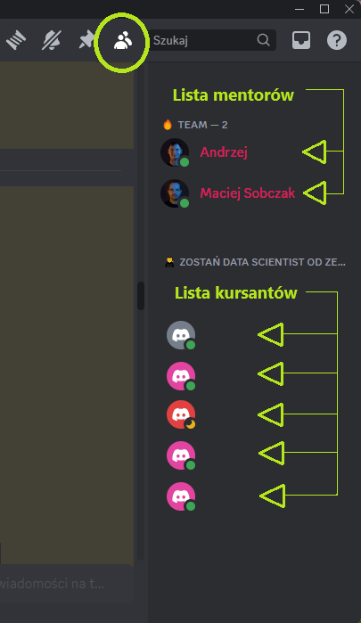
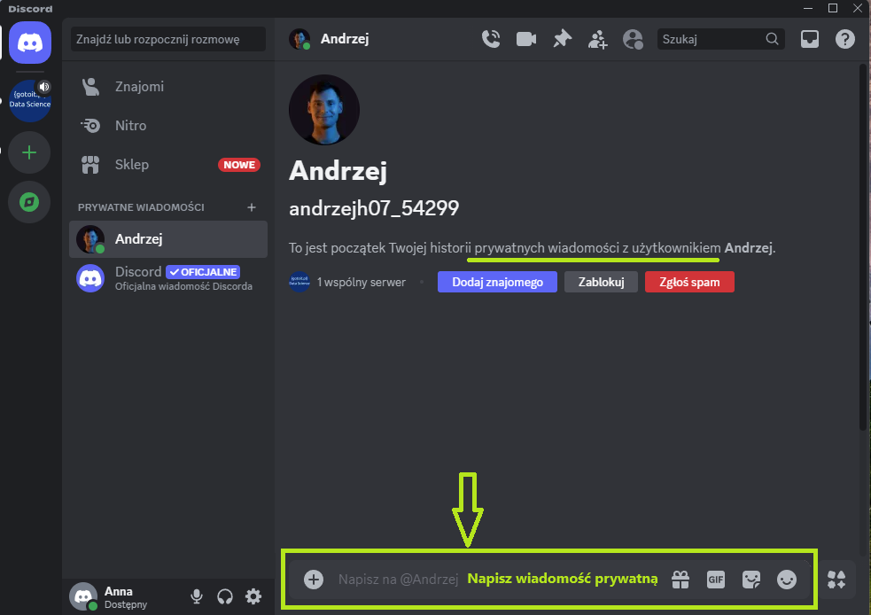

Jak zacząć pracę z kursem?¶
Witajcie w przewodniku, który pomoże Wam rozpocząć przygodę z kursem. Znajdziecie tu praktyczne wskazówki i instrukcje.
Kurs dzieli się na 12 modułów, które zawierają w sobie pojedyncze lekcje. W każdej lekcji czeka na Was film z omówieniem tematu i opis tematu. Do lekcji pod filmem i opisem dołączane są niezbędne materiały.
Mogą one występować w postaci:
-
linków (po naciśnięciu odsyłają do strony internetowej)
-
plików do pobrania (po naciśnięciu rozpocznie się proces pobierania na Wasz komputer)
Gdzie szukać pomocy w razie problemu?
W przypadku wystąpienia jakichkolwiek trudności, stworzyliśmy i stale aktualizujemy dla Was sekcję
FAQ - zbiór najczęściej zadawanych pytań
Znajdziecie tam przykłady problemów wraz z wytłumaczeniem i dokładną instrukcją postępowania.
Tip 1. Jak pracować z lekcjami?¶
-
Tryb - oglądanie, słuchanie, czytanie.
Możesz po prostu oglądać filmy i czytać treści zamieszczone pod filmami. Po każdym ważnym temacie czeka na Ciebie film powtórkowy Flashcards, który również możesz oglądać i na głos odpowiadać na pytania. Po każdym dziale będą na Ciebie czekały Zadania domowe, dzięki którym możesz przećwiczyć zdobytą wiedzę.
-
Tryb - ćwiczenie na równi z filmem.
W niektórych lekcjach demonstrujemy bezpośrednie zastosowanie pewnych konceptów i narzędzi.
Przy takich filmach gorąco zachęcamy do aktywnego przejścia przez lekcję razem z nami, krok po kroku.
Pod filmem i opisem załączone są materiały (pliki, linki), używane w danej lekcji. Pobierz je, otwórz i powtarzaj kroki zaprezentowane przez mentora.
Kliknij w link, zacznie się pobieranie pliku:

Następnie ustaw okna tak, aby po jednej stronie widzieć okno przeglądarki z filmem z lekcji, a po drugiej stronie otwarty plik z pobranym materiałem z tej lekcji (np. z Notebookiem). Najedź kursorem na otwarty plik w przeglądarce > naciśnij prawym przyciskiem myszy > wybierz Przenieś kartę do innego okna > Nowe okno

Następnie naciśnij ikonę kwadratu w prawych górnych rogach okien przeglądarek i ustaw sobie okno z filmem po jednej stronie, a z materiałem po drugiej.

W ten sposób możesz jednocześnie oglądać film i samodzielnie uruchamiać procesy, testować - bawić się kodem i funkcjami.
Dodatkowo, rozwiązując kilka lekcji z rzędu, możesz łatwo przenosić i otwierać kolejne pobrane pliki:
Pobierz plik > naciśnij ikonę Pobrane pliki > wybierz najnowszy pobrany plik, złap go i przenieś do drzewa plików w notebooku

Tip 2. Kolejność lekcji na platformie¶
Jak przechodzić lekcje chronologicznie?
Pod każdą lekcją widnieje spis zawartości kursu. Możesz tam zobaczyć, w którym miejscu aktualnie się znajdujesz (zaznaczone na szaro), ile jeszcze przed Tobą, a ile za. Kolejność lekcji wypisana jest w dwóch pionowych kolumnach. Przejdź najpierw całą lewą kolumnę (od góry do dołu), a potem całą prawą kolumnę.
-
Chcąc przejść chronologicznie do kolejnej lekcji, naciśnij na tę, która jest pod spodem.

-
Innym sposobem na przechodzenie do następnej lekcji w odpowiedniej kolejności jest naciśnięcie przycisku Następna w prawym rogu nad filmem.

Tip 3. Gdzie zapisywać materiały?¶
Z czasem trwania kursu, plików i materiałów będzie coraz więcej. Dlatego zadbaj od początku o zbieranie plików w jednym folderze, z podziałem na moduły.
Instrukcja:
-
Utwórz na pulpicie nowy folder o nazwie: od_zera_do_ai
Mając kursor myszki na pulpicie naciśnij prawy przycisk myszy. Najedź myszką na Nowy > kliknij na Folder

Nazwij folder

-
Wejdź do tego folderu (najedź na niego myszką i kliknij szybko dwa razy lewym przyciskiem myszy). Utwórz w tym folderze, kolejne foldery tak aby przygotować miejsce na zapisywanie materiałów z kursu. To pomoże Ci zachować przejrzystość i chronologię.
Mając kursor myszki w folderze, naciśnij prawy przycisk myszy. Najedź na Nowy > kliknij na Folder

Nazwij nowy folder. Stwórz kilka kolejnych folderów. Nazwij je: modul_1, modul_2, modul_3. Kompletuj w każdym z nich materiały z tych właśnie modułów.
Tip 4. Zapisywanie stron do paska zakładek¶
W poszczególnych lekcjach będą pojawiały się linki do stron internetowych. Do niektórych stron będziemy często wracać w trakcie trwania kursu. Dlatego polecamy, abyś od początku zapisywał/zapisywała sobie te strony w pasku zakładek w przeglądarce, lub w folderze zakładek w przeglądarce. Dzięki temu, będziesz miał/miała je pod ręką.
-
Zapisywanie strony do zakładek
Kliknij w link z lekcji aby wyświetlić zawartość

Po wyświetleniu się strony internetowej, do której prowadził link, najedź myszką w prawy górny róg przeglądarki i naciśnij ikonę trzech kropek.
Następnie Zakładki i listy > Dodaj tę kartę do zakładek
Nazwij swoją zakładkę i wybierz, w którym miejscu chcesz ją zapisać.
Dzięki temu strona pojawi się w pasku zakładek i bardzo szybko, jednym kliknięciem, będziesz mógł/mogła do niej zajrzeć.
-
Tworzenie folderu w pasku zakładek
Możesz też utworzyć folder w pasku zakładek, aby tam zapisywać linki przydatne w procesie uczenia się.
Kliknij prawym przyciskiem myszy na puste miejsce na pasku zakładek w przeglądarce. Wybierz opcję Dodaj folder

Nazwij folder i wybierz miejsce gdzie chcesz go mieć w przeglądarce.
Zapisuj sobie wszystkie ważne linki z kursu, tak abyś miał/miała je zawsze pod ręką.
Tip 5. Jak zrobić screena?¶
Screen - elektroniczny zapis, zrzut obrazu aktualnie wyświetlanego na ekranie komputera. To tak jakby zrobić zdjęcie tego co widzimy na naszym komputerze/monitorze. Screen można zapisać jako plik, można go do kogoś przesłać, coś na nim zaznaczyć, narysować. Robienie screenów będzie przydatne w kursie, aby pokazywać zadania domowe albo formułować pytania, zgłaszać problemy.
-
Jak zrobić screena - narzędzie wycinanie.
W miejsce wyszukiwania na pasku zadań wpisz Narzędzie Wycinanie, kliknij w nie

Uruchamia się Narzędzie Wycinanie
Możesz kliknąć w przycisk Nowy albo użyć skrótu klawiszowego Logo Windows + Shift + S, następnie zaznacz myszką obszar, który chcesz wyciąć.
To widok pulpitu i zaznaczenie obszaru:

A tak widać, uzyskanego przez zaznaczenie, screena w Narzędziu Wycinania

Sprawdź ustawienia Twojego Narzędzia Wycinania, aby wiedzieć gdzie będą zapisywały się Twoje screeny.

Przy takim ustawieniu, screeny będą trafiały do Obrazy > Zrzuty ekranu

W Narzędziu Wycinanie możesz edytować Twojego screena, rysować po nim, zaznaczać, podkreślać, robić strzałki.

Możesz wybrać kolor zaznaczania i rozmiar lini.
Tip 6. Jak i gdzie zgłaszać problem?¶
Jeśli w trakcie przechodzenia kursu, wystąpi u Ciebie problem i nie znajdziesz rozwiązania w dziale FAQ, napisz do nas na Discordzie.
Link do naszego kanału znajduje się na stronie głównej kursu Pracuj w AI: Zostań Data Scientist od Zera:
Aby zgłosić problem na Discordzie, który jest miejscem wymiany doświadczeń i pomocy między kursantami i mentorami, postępuj zgodnie z poniższymi krokami:
-
Wybierz odpowiedni kanał, zgodny z modułem, w którym masz problem np. modul-1-pytania-i-problemy jeśli Twój problem dotyczy lekcji z modułu pierwszego
Tak wygląda lista kanałów:
-
W wiadomości załącz link do lekcji, w której wystąpił Twój problem
- Opisz jak najwięcej informacji o Twoim problemie
-
Zamieść jeden lub więcej screenów, żeby pokazać szczegóły Twojego problemu. Jeśli wyskakuje Ci błąd w kodzie, zadbaj o to by pokazać początek - nazwę błędu i koniec błędu. Na screenie możesz zaznaczyć strzałkami lub podkreślić dokładnie miejsca, które stwarzają problem. Pokaż też używane pliki i ich nazwy.
Początek błędu:
Koniec błędu:

Widok na okno Discorda:
Przykład zgłoszenia problemu z modułu 5:

Tak wygląda wiadomość przed wysłaniem. Możesz jeszcze zmienić załączone pliki, usunąć, dodać. Naciśnij Enter aby wysłać.
Tak wygląda wysłana wiadomość:

Czekaj na odpowiedź.
Tip 7. Gdzie zamieścić zadanie domowe na Discordzie?¶
Po zakończeniu modułu, w którym jest zadanie domowe, możesz je rozwiązać i wysłać na Discordzie do sprawdzenia.
-
Wybierz odpowiedni kanał, zgodny z modułem, w którym jest zadanie domowe np. modul-1-zad1 jeśli Twoje zadanie dotyczy modułu pierwszego
-
Napisz wiadomość, w której opiszesz, że wysyłasz zadanie domowe. Załącz pliki z rozwiązaniem zadania. Możesz też napisać, co jest Twoim zdaniem najtrudniejsze w zadaniu, co sprawiło Ci najwięcej problemów, co udało Ci się zrobić, a co nie.
- Przykładowa wiadomość prawidłowo wysłanego zadania domowego z modułu 1:
- Przykładowa wiadomość prawidłowo wysłanego zadania domowego z modułu 3:
-
Gotowe! Czekamy na odpowiedź!
Tip 8. Jak spakować pliki do ZIP-a?¶
W przypadku, gdy będziesz miał/miała wiele plików w folderze z zadaniem domowym, aby je wysłać, można skompresować ten cały folder do formatu ZIP. Spakowanie plików pozwala na wysłanie kilku plików jako jednego pliku, a kompresja pozwala, zmniejszyć rozmiar przesyłanych danych, co ułatwia ich wysyłanie. Sam proces jest szybki i prosty.
Wystarczy, że: Klikniesz prawym przyciskiem myszy na folder, który chcesz kompresować > najedź na: Kompresuj do > wybierz Plik ZIP

Pod folderem, który wybrałeś/wybrałaś, pojawi się skompresowany folder w formacie ZIP. Jeśli jest taka potrzeba możesz jeszcze zmienić jego nazwę.
I gotowe! Tak przygotowany folder np. z zadaniem domowym, możesz wysyłać na Discordzie.
Tip 9. Jak wysłać prywatną wiadomość na Discordzie?¶
Na Discordzie istnieje możliwość wysłania wiadomości prywatnej, bezpośrednio do jednej, wybranej osoby. W oknie Discorda po prawej stronie, znajduje się lista członków. W przypadku naszej grupy: "GOTOIT Data Science" u góry będziemy widzieli listę mentorów i osób z zespołu, a pod spodem grupę kursantów.

Aby wysłać wiadomość prywatną, bezpośrednio do jednej osoby, należy najechać kursorem myszki na wybraną osobę, do której chcemy napisać > wcisnąć prawy przycisk myszy > wybrać Wyślij wiadomość
Po czym pojawi się okno do rozpoczęcia bezpośredniej konwersacji z wybraną osobą. Wystarczy wtedy napisać wiadomość i wysłać wciskając Enter

Osobę do bezpośredniej konwersacji można też wybrać z okna wyświetlanego kanału. Wystarczy znowu najechać kursorem na osobę > wcisnąć prawy przycisk myszy > wybrać Wyślij wiadomość

Po czym również wyświetli się okno prywatnej konwersacji. Można napisać wiadomość i wysłać wciskając Enter

Z okna bezpośredniej konwersacji można wrócić do widoku głównego grupy, klikając w ikonę grupy: "GOTOIT Data Science" w lewym górnym rogu.